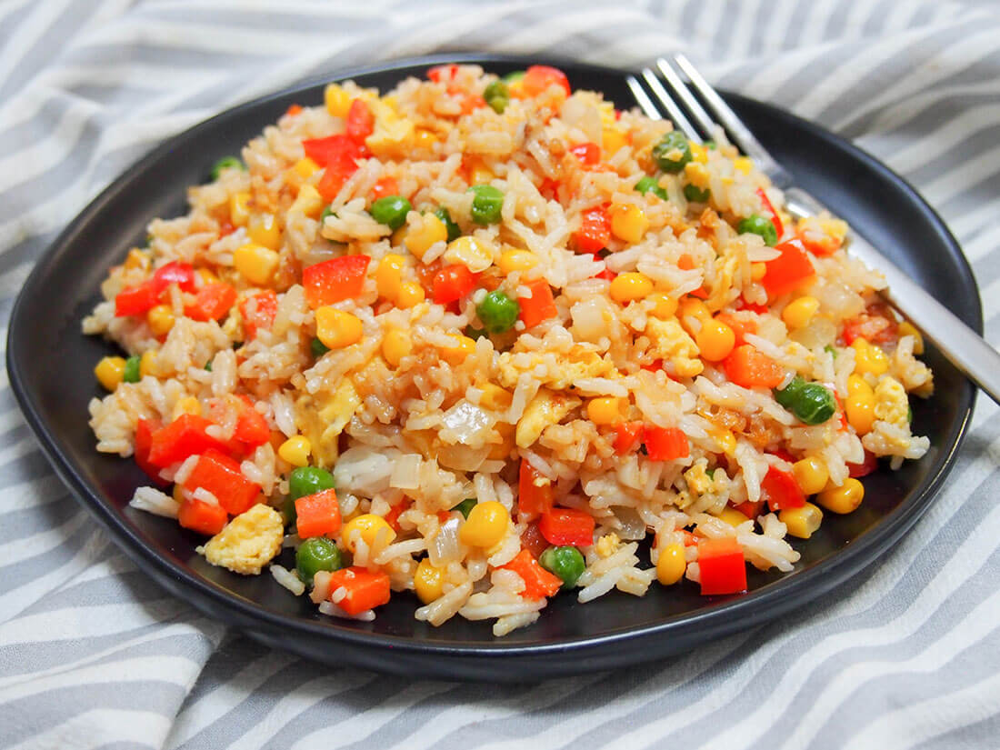

Homepage
Rice with Egg

Description
This is a weird one. Simple but with interesting taste. It is very important that rice needs to be cooked properly
Ingredients
- Carrot
- Onion
- Garlic
- Soy Sauce
- Egg
- Corn
- Bell Pepper
- Sesame Seeds
- Spring Onion
- Cooked Rice
- Extra Virgin Olive Oil
Steps
- In heated oil, put carrot, bell pepper, onion and garlic and fry a bit
- Add egg and start stirring immediatelly
- Add cooked rice and continue stirring
- Turn of the heat, add soy sauce, corn, spring onion and sesame seeds and mix well